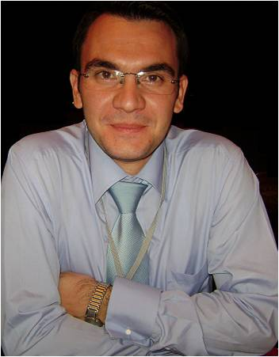

Kadir Gömbeyaz

Doç. Dr. Kadir Gömbeyaz
Özgeçmiş
03.06.1979 Bandırma'da doğdu
1996 Bandırma İmam Hatip Lisesi'nden mezun oldu
1996-2001 Uludağ Üniversitesi İlahiyat Fakültesi'nde öğrenim gördü
Şubat-Aralık 2002 Şanlıurfa'da Din Kültürü ve Ahlak Bilgisi öğretmenliği yaptı
Aralık 2002 Uludağ Üniv. İlahiyat Fakültesi'nde İslam Mezhepleri Tarihi Anabilim Dalı'na Araştırma Görevlisi olarak göreve başladı.
Ağustos 2005 Makâlât Geleneğinde İmâm Eş'arî başlıklı taziyle yüksek lisansını tamamladı.
Mart-Temmuz 2007 Hollanda'da Radboud Universiteit Nijmegen'da Erasmus değişim öğrencisi olarak bulundu.
2005-2015 İslâm Literatüründe İtikâdî Fırka Tasnifleri başlıklı doktora teziyle Dr. oldu.
Mart 2015 Kocaeli Ü. İlahiyat F. Yardımcı Doçent olarak atandı.
Mart 2020'de Doçent oldu.
ARAŞTIRMA VE YAYINLARI
Makaleler
Telif
•1. "73 Fırka Hadisinin Mezhepler Tarihi Kaynaklarında Fırkaların Tasnifine Etkisi", Uludağ Üniv. İlahiyat Fak. Dergisi, cilt: 14, sy: 2, 2005, ss. 147-160.
Tercüme
- Etan Kohlberg, "İslam Kelamında Muvafat Nazariyeleri", (çev. Kadir Gömbeyaz), İslami İlimler Dergisi Kelam Sayısı, yıl: 4, sy 1-2, Bahar-Güz 2009, ss. 401-415.
- R. Sean O'fahey, "Askıya Alınmış Sufilik -Sudan Mehdisi ve Sufiler-", (çev. Kadir Gömbeyaz), Tasavvuf, yıl:10, sy. 24 (2009), ss. 97-112.
- Basheer M. Nafi, "Yeniden Dirilen Selefîlik: Nu‘mân el-Alûsî ve İki Ahmed Muhakemesi", (çev. Kadir Gömbeyaz), Marife Selefilik Özel Sayısı, yıl: 9, sy: 3, Kış 2009, ss. 293-326.
Ansiklopedi Maddesi
•1. "H. A. R. Gibb (1895-1971)" in Dictionary of Literary Biography, Volume 366: Orientalist Writers (ed. Coeli Fitzpatrick and Gwayne A. Tunstall; USA: Gale "A Bruccoli Clark Layman Book", 2012), 115-121.
Kitap Kritiği
- İmam Mâturîdî ve Maturidilik, Tarihi Arka Planı, Hayatı, Eserleri, Fikirleri ve Maturidilik Mezhebi, Haz. Sönmez Kutlu, (Tanıtan: Kadir Gömbeyaz), Marife (Ehl-i Sünnet Özel Sayısı), yıl:5, sayı:3, Konya, Kış 2005, ss. 463-466.
- Ehl-i Sünnet'e Giden Yolda İbn Küllâb ve Küllâbiye Mezhebi, Tevfik Yücedoğru, (Tanıtan: Kadir Gömbeyaz), Usûl İslam Araştırmaları, sy: 5, Ocak-Hazian 2006, ss. 215-219.
- Mezhepler Tarihine Giriş, Sönmez Kutlu, (Tanıtan: Kadir Gömbeyaz), Uludağ Ü. İlahiyat F. Dergisi, cilt: 18, sy: 1, yıl: 2009, ss. 629-636.
- Tefsirde Ehl-i Sünnet & Şîa Polemikleri, Mustafa Öztürk, (Tanıtan: Kadir Gömbeyaz), İslâm Araştırmaları Dergisi 23 (2010), 157-161.
Sempozyum/Kongre Tanıtımı/Kritiği
- The Qur'an: Text, History and Culture, 6th Biennial Conference on the Qur'an, 12-14 November 2009, organized by the Centre for Islamic Studies, SOAS, University of London, London-UK, (Tanıtan: Salih Kesgin & Kadir Gömbeyaz), Ilahiyat Studies I/1 (2010), 136-141.
- "International Conference: ‘Takfir: A Diachronic Perspective,' 24-26 October 2011, Madrid-Spain," Ilahiyat Studies II/2 (2011), 258-264.
- "Uluslararası Molla Hüsrev Sempozyumu (18-20 Kasım 2011, Bursa)", Uludağ Ü. İlahiyat F. Dergisi, cilt: 20, sy: 2, yıl: 2011.
Bildiriler
Uluslararası Kongre ve Sempozyumlarda Bildiriler
- "İtikadi Fırka Tasnifçiliğinde Amidi'nin Yeri", Uluslararası Seyfuddin Amidi Sempozyumu, 24-26 Ekim 2008, Diyarbakır.
- "Molla Fenari'ye Nispet Edilen Eserlerde Aidiyet Problemi ve Molla Fenari Bibliyoğrafyası", Uluslararası Molla Fenari Sempozyumu, 4-6 Aralık 2009, Bursa.
- "Three Research Projects in the Field of Kalām at the Uludağ University in Bursa", (Orhan Şener Koloğlu ve Veysel Kaya ile birlikte), The Second International Conference of the European Research Council's FP 7 Project: "Theological Rationalism in the Medieval World of Islam", İstanbul: Orient Institut Istanbul, 4-6 June 2010.
- "Vani Mehmed Efendi'nin Hz. İbrahim'in Babası ve Ebeveyn-i Resul Hakkındaki Görüşleri", Ulusal Vani Mehmed Efendi Sempozyumu, 7-8 Kasım 2009, Kestel/Bursa
•2. "Bâbertî'ye Nispet Edilen Bir Fırak Risalesi Hakkında Tespitler ve Mülahazalar", Ekmeluddin Baberti Sempozyumu, 28-30 Mayıs 2010, Bayburt.
Kitap Editörlüğü
- "Kelamda Bilgi Problemi" İlahiyat Fakülteleri V. Kelam Anabilim Dalı Eğitim-Öğretim Meseleleri ve Koordinasyon Toplantısı ve Kelam'da Bilgi Problemi Sempozyumu, (Arş. Gör. Orhan Şener Koloğlu ve Arş.Gör Ulvi Murat Kılavuz ile birlikte), Bursa: Arasta Yayınları 2003.
- Uluslararası Molla Fenari Sempozyumu (4-6 Aralık 2009 Bursa) -Bildiriler-, (editörler: T. Yücedoğru, O.Ş. Koloğlu, U.M. Kılavuz, K. Gömbeyaz), Bursa: Bursa Büyükşehir Belediyesi Yayınları, 2010.
- Uluslararası Hocazâde Sempozyumu (22-24 Ekim 2010 Bursa) -Bildiriler-, (editörler: T. Yücedoğru, O.Ş. Koloğlu, U.M. Kılavuz, K. Gömbeyaz), Bursa: Bursa Büyükşehir Belediyesi Yayınları, 2011.
- Uluslararası Mola Hüsrev Sempozyumu (18-20 Kasım 2011 Bursa) -Bildiriler-, (editörler: T. Yücedoğru, O.Ş. Koloğlu, U.M. Kılavuz, K. Gömbeyaz, V. Kaya), Bursa: Bursa Büyükşehir Belediyesi Yayınları, 2012.
Sempozyumu Tertibi
- Uluslararası Molla Fenari Sempozyumu, 4-6 Aralık 2009, Bursa.
- Uluslararası Hocazâde Sempozyumu, 22-24 Ekim 2010, Bursa.
- Uluslararası Mola Hüsrev Sempozyumu, 18-20 Kasım 2011, Bursa.
Dergi Editörlüğü
- Ilahiyat Studies: A Journal on Islamic and Religious Studies (Book Review Editor olarak)
Dergi Yayın Kurulu Üyeliği
- Uludağ Üniversitesi İlahiyat Fakültesi Dergisi (Yayın Kurulu Üyesi olarak, c. XVII, sy. 2, yıl 2008'den itibaren)
Eserleri ve danışmanlıkları
Makalat Geleneğinde İmam Eş'ari
Kadir Gömbeyaz · 2005 · Uludağ Ü. SBE.
73 Fırka Hadisinin Mezhepler Tarihi Kaynaklarında Fırkaların Tasnifine Etkisi
Kadir Gömbeyaz · 2005 · Uludağ üniversitesi ilahiyat fakültesi dergisi
İtikadi Fırka Tasnifçiliğinde Amidi'nin Yeri
Kadir Gömbeyaz
İlgili haberler
Yeni Doçent: Kadir GÖMBEYAZ
Kocaeli Üniversitesi'nden Dr. Kadir GÖMBEYAZ, Doçent unvanını aldı. Kendisini tebrik ediyoruz. Kendisine ve camiamıza hayırlı olsun.
Yeni Yrd. Doçent: Kadir GÖMBEYAZ
Uludağ İlahiyattan araştırma görevlisi arkadaşımız Kadir GÖMBEYAZ, Yardımcı Doçent olarak Kocaeli Üniversitesi İlahiyat Fakültesi'ne atandı. Kendisini tebrik ediyor, hayırlı olsun diyor ve yeni hizmet yerinde yeni unvanıyla iyi çalışmalar diliyoruz.
Yeni Sayı: e-Makalat 2012 yılı 1. sayısı yayımda
e-Makalat Mezhep Araştırmaları Dergisi yeni (Cilt 5, Sayı 1 (2012)) sayısı yayımlandı. Yeni sayımıza www.emakalat.com adresinden ulaşabilirsiniz. Makaleler Kadir GÖMBEYAZ, BABERTÎ’YE NİSPET EDİLEN BİR FIRAK RİSALESİ HAKKINDA TESPİTLER VE MÜLAHAZALAR, ss. 7-33